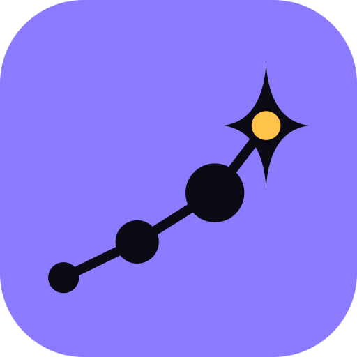

Ton rêve d'enfant,
15 minutes à la fois.
Écris-le une fois. On le découpe en micro-actions, et tu n'as plus qu'à en faire une par jour.
Télécharger sur l'App Store Télécharger sur Google PlayGoDream arrive bientôt sur l'App Store et Google Play.